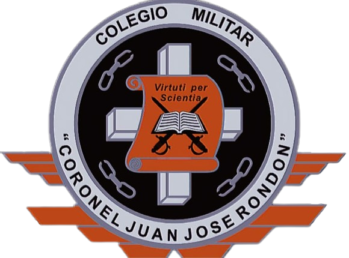

Antecedentes
Ubicado en una amplia y moderna sede campestre en la vecina población de Funza, Departamento de Cundinamarca. Fue fundado por su propietario y Director General, Doctor Servio Tulio López Vidueñes en el año de 1972.
Optó por la modalidad “Orientación Militar” y recibió la aprobación del Ministerio de Defensa en 1994, teniendo desde entonces como Unidad Directora a la Escuela de Comunicaciones del Ejército ubicada en Facatativá.
Nuestro Lema es: “A la virtud por la ciencia” 1972 Nace el colegio con el nombre de “Mahatma Gandhi”,
1973 Se gradúan los primeros y los únicos bachilleres, pues, a partir de ese año se dejó únicamente el Ciclo Básico (Hasta 9 º).
1974 Cambio de sede: De donde se fundó (Sede actual del Colegio Santa Ana), hasta la casa contigua donde se ubicaba la Notaría.
1977 El municipio reconoció al Colegio como tal y adjudico por primera vez becas a algunos de nuestros alumnos.
1978 Se fundó la jornada nocturna con solo el 10º grado y con apenas 12 alumnos. Este año, la parroquia aceptó la existencia de nuestro Colegio y designó por primera vez el Rosario en mayo.
1979 Con gran éxito se abrieron todos los cursos de bachillerato en el Nocturno, se graduaron los primeros bachilleres nocturnos y se cerró el internado por falta de espacio.
1982 Traslado del edificio donde están hoy las oficinas del Municipio (Deportes, Fiscalía, etc.).
1983 Se inicia en el Colegio la modalidad “Orientación Militar”. Se contrató al Mayor José Rengifo Moncayo como su Director. Se iniciaron los trámites por la aprobación militar. Se compró la banda.
1984 Se compró el lote donde hoy está el Colegio. Se contrató al General Hernando Castro Ortega como nuevo Director.
1985 Se gradúan los primeros bachilleres de esta nueva época y en esta nueva modalidad. Se cambió el Nombre antiguo por el actual.
1987-8-9 Se edificó en el lote lo mínimo indispensable para trasladarnos.
1990 Traslado al edificio nuevo y propio. Reapertura del internado (con nueve alumnos). No se edificó más por falta de dinero; tan solo se completó lo ya existente.
1991 Cierre definitivo dela jornada nocturna.
1992 Se construyeron unos salones provisionales para primaria.
1993 Se construyó la zona Militar provisional. Al fin de año se contrató al Coronel Germán Tejada Cascante para que gestionara la aprobación milita. La parroquia no nos volvió asignar el Rosario en el mes de mayo.
1994 Muere el General Castro. El Ministerio de Defensa dio al fin, después de 12 años de búsqueda, la aprobación al Colegio, mediante Resolución N.º 9024 de agosto 31/94. Se establece la Ley General de Educación como Ley Nº 115 de febrero 8/94 y el Decreto 1860, de agosto 3/94. Se creó el departamento de psicoorientación.
1995 Se inicia la Instrucción Militar ya legalizada con los Cadetes de 9º. Se reinicia La construcción en la zona administrativa. Se contrató al Coronel Tejada como Rector Militar.
1996 Se continúa con la construcción. La Secretaría de Educación nos visitó para la renovación de la Aprobación: Excelente. Se hizo la primera Ceremonia de Entrega de Armas a los Cadetes del grado 10º, y se testificó su Juramento de Bandera, en la sede del Batallón de Comunicaciones de Facatativá.
1997 Salió la primera promoción de Bachilleres Militares con Libreta de Primera. El Colegio con los resultados de la primera Prueba de Estado ICFES quedo clasificado en “alto”.
1999 Se continúa con la construcción. Se inauguró el salón múltiple con la Ceremonia de Graduación de la tercera promoción de Bachilleres Militares con la Libreta de Primera.
2000 La Secretaría de Educación de Cundinamarca aprueba la Básica Primaria mediante Resolución Nº 000839 de junio 23/2000 y la Básica Secundaria con Resolución Nº 001164 de agosto 24/2000. Se contrató al Coronel Guillermo Micán Avellaneda como Rector Militar.
2001 Se contrató a Sonia González Puentes como Psicoorientadora. Salió la quinta promoción de Bachilleres Militares con libreta de Primera.
2002 Se cambia el Sistema de Evaluación con el Decreto Nº 230 de Febrero 11/2002. Se contrató al Mayor Laureano Melo Valero como Rector Militar.
2003 Salidas pedagógicas
2004 Se creó el servicio médico con la Dra. Lenny Insuasty León, odontológico con el Dr. Francisco Garavito Ruiz y enfermería. Se creó la capellanía con el Padre Reemberto Guzmán Plazas, se celebran las primeras comuniones y las confirmaciones. Se creó el departamento de Contabilidad con la contadora María Elisa Ramírez. El Colegio se Clasificó según la autoevaluación en Libertad Vigilada para los costos del año 2005. El Colegio participó por primera vez en la Caminata de la Solidaridad por Colombia en Bogotá. El Teniente Óscar Olmos Castillo asumió la Coordinación de Convivencia y Disciplina.
2005 Se creó la Banda Marcial de Básica.
2006 Se creó el departamento de Bienestar Estudiantil y el de Recursos Humanos. El Colegio se clasifica en “Superior” con los resultados de la prueba de Estado ICFES. Se crea la Ley 1098 en noviembre 8/2006 “Código de la Infancia y la Adolescencia”. Salió la décima promoción de Bachilleres Militares con libreta de Primera.
2007 Se creó la oficina de Atención al Cliente con Julio Cesar Hernández.
2008 La profesora Nohora Ligia Venegas obtuvo el 1º puesto en la categoría especial en el concurso Municipal de ortografía.
2009 El colegió obtuvo el 1º puesto en las 3ª olimpiadas Municipales de química. Último año de aplicación del Decreto 230. Se creó el Decreto 1290 en abril 16/2009 sobre el Sistema de Evaluación y Promoción para regir a partir del año 2010.
2010 Se inaugura la sala re recibo. Cambia el sistema de evaluación y Promoción con el Decreto Nº 1290 y se creó el SIEDES- COMCOR.
2011 Se creó en CRI (Centro de recursos idiomáticos) y se dota el bibliobanco de textos nuevos para el área de inglés. Se construyen las piscinas y el kiosco para los comedores. Se inicia con la panadería. Se crea la coordinación académica con cinco coordinadores, uno por áreas. Salió la décima quinta promoción de Bachilleres Militares con libreta de Primera. Muere en combate el Subteniente del Ejército Julián Mancipe Celis, destacado exalumno de la Décima Promoción (año 2006).
2012 Se celebran los 40 años del colegio. La coordinación académica con tres coordinadores: Lic. Luz Myriam Cruz (Ciencias, sociales, ética, religión, filosofía y primaria), Lic. Wilson Peña (Matemáticas, física y humanidades) y el Lic. Alexander Gamboa (Educación física, artes, militares de la básica y tecnología e informática). Se hicieron modificaciones al SIEDES COMCOR (Valoración cuantitativa). Se hizo una mejor selección de estudiantes, bajo el número de alumnos en la institución. Se cambió el Pre- ICFES por curso en su respectivo salón.
Marco legal
COLEGIO MILITAR
“CORONEL JUAN
JOSÉ RONDÓN”
PROYECTO EDUCATIVO
INSTITUCIONAL
Código: D 1100-GE-01
Versión 2012
Página 2 de 3
COLEGIO MILITAR
“CORONEL JUAN
JOSÉ RONDÓN”
PROYECTO EDUCATIVO
INSTITUCIONAL
Código: D 1100-GE-01
Versión 2012
Página 3 de 3

El naranja aporta un espíritu de independencia y confianza, es el color de la energía constructiva y de la creatividad, de nuestro plantel.
El blanco representa la lealtad, que hace grande a la persona, transparencia hecha verdad, sencillez y sinceridad, pureza, claridad, integridad, amor a la verdad, cualidades de los cadetes militares.
El negro simboliza la elegancia, prestigio, autoridad y el orgullo que sentimos por nuestro pais.
Himno del colegio
Coro
Salve usted la patria, noble juventud,
En el Colegio Rondón, con virtud.
Con disciplina y esfuerzo sin fin,
Forjamos el camino al porvenir.
Estrofa 1
Con paso firme y corazón valiente,
Hacia el horizonte, siempre hacia adelante.
Con lealtad y honor, nuestro compromiso,
En el Colegio Rondón, somos un gran equipo.
Estrofa 2
Educación y patria, unidos en un lazo,
Formamos ciudadanos con firme abrazo.
Enseñamos valores, el deber cumplir,
En el Colegio Rondón, nuestro deber es seguir.
Estrofa 3
Salve a la patria, con orgullo y honor,
En el Colegio Rondón, cada día mejor.
Con conocimiento y respeto hacia la nación,
Hacemos historia en esta educación.
Autor:Juan García Pablo Callejas.
Musica:Servio Tulio Lopéz Vidueñes.
Escudo

Las espadas cruzadas son símbolos de batalla, lucha o competencia.
El pergamino representa el conocimiento y la cultura.
Los 3 eslabones simbolizan la unión entre Dios, Patria y Familia, al estar en las 4 esquinas representa la rosa de los vientos, lo que nos indica que sin importar donde se encuentren nunca estarán solos.
La cruz ofrece al hombre moderno un mensaje de fe y esperanza, porque ella es el signo de nuestra reconciliación definitiva con el amor de Dios.
Las alas del escudo significan que siempre debes de superarte y siempre seguir, con disciplina, dedicación y esfuerzo.
El libro abierto es el cambio de la ciencia, el arte y la cultura, instrumento eficaz del aprendizaje.